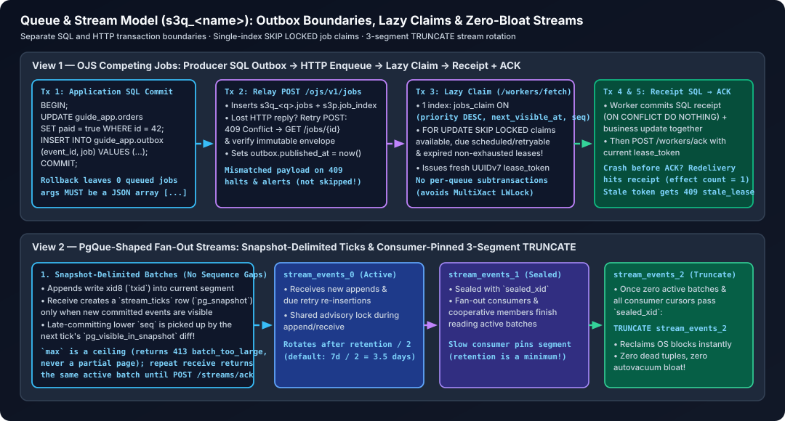

Queue and stream model
pgvs3 has one queue namespace type, s3q_<name>, with two delivery views over the same PostgreSQL schema:
- Jobs (OJS core): mutable per-job state, competing workers, leases, priority, delayed delivery, retries, heartbeats, cancellation and id lookup.
- Streams (PgQue-shaped): an append-only event log, snapshot-delimited batches, independent fan-out cursors, batch ack, per-message retry and a dead-letter queue.
Both views share the namespace catalog, configuration, quota, autovacuum, maintenance pass, DROP SCHEMA deletion, and backup boundary. A queue may be used as a job queue, a stream, or both; the tables do not interfere.
For runnable producer/worker recipes and failure handling, see jobs, application outboxes and streams. Sharing PostgreSQL does not make application SQL + HTTP enqueue/append/ACK atomic. Stable IDs, leases, effect receipts and retention are distinct boundaries, not exactly-once execution or a supported direct-SQL mutation API.

Why one namespace, two views
PgQue’s useful idea is not “replace jobs with events”. It is that an append-only shared log plus per-consumer cursors gives replay, fan-out and predictable retention without a row-claim queue. OJS jobs need the opposite shape: a small mutable row per job and a lease. Keeping both in one schema gives each workload the right delivery path while consolidating:
- namespace creation, listing, quotas, drop and backup;
- queue configuration and observability;
- maintenance (TTL, retries, retention, leases);
- one HTTP route family and one operational port.
The job table is not event-sourced. It remains the authoritative state for OJS; the stream log is a separate append-only log in the same namespace.
Design invariants
- The OJS
jobsrow is authoritative for job state. Stream consumers never mutate job state. seqorders storage only. Tick snapshots decide batch visibility, so a transaction that commits late cannot be skipped by a sequence cursor.- A stream cursor advances only on batch ack or an empty receive that reaches a newer existing tick. There is no per-message cursor.
- The event log is segmented. Rotation never truncates a segment that a subscription cursor or batch still needs.
retentionis a minimum. Table-granular rotation can keep events longer; a slow consumer extends it rather than losing data.- All stream mutations go through OJS. There is no supported direct-SQL API.
- Each stream operation is one PL/pgSQL call. The
stream_*functions in every queue schema (internal/store/schema.sql) hold the transaction, segment lock, row locks and cursor arithmetic; Go validates arguments and maps errors.
Stream tables
All tables are created by s3p.ensure_queue_schema:
| Table | Purpose |
|---|---|
stream_config |
max_retries, retention, current segment and its start time; one row per queue. |
stream_ticks |
tick_id, pg_snapshot, max_seq; batch boundaries. |
stream_segments |
per-segment seal transaction/time for three physical event segments. |
stream_events |
partitioned append-only seq, segment, event_id, txid (xid8), type, JSON payload, headers, retry count, created time. |
stream_events_0..2 |
the three physical partitions; the oldest is truncated on rotation. |
stream_subscriptions |
one row per consumer/group, with last_tick and cooperative next_tick cursors. |
stream_batches |
one active batch per consumer/member, with start/end tick and acked_at for out-of-order cooperative acks. |
stream_batch_events |
the exact event sequence in a batch, so ack/nack is stable if later events arrive. |
stream_retry_events |
due retries with a new delivery time. |
stream_dead_letters |
exhausted messages with reason and payload. |
Visibility and batches
A receive reuses the latest existing tick when possible. If there is no newer tick, it checks the current snapshot for newly visible events and creates a tick only when there are events to return. The batch is the set of events visible in the new snapshot but not visible in the consumer’s previous tick. This is PgQue’s two-snapshot diff and avoids the classic sequence-gap problem: an event inserted before the tick but committed after it is picked up by a later tick even if its sequence number is lower.
max on receive is a ceiling, not a page size. If the next batch exceeds it, the receive returns 413 batch_too_large and leaves the cursor and active batch unchanged; the consumer can retry with a larger ceiling. An active batch is returned again rather than creating a second one.
Ack, nack, retry, DLQ
ack(batch_id)advances the fan-out cursor to the batch’s end tick and releases the batch. With cooperative members, acks may complete out of order; the group cursor advances only over contiguous completed batches.nack(batch_id, message_id, retry_after)leaves the batch active and records one message instream_retry_events, or instream_dead_letterswhenmax_retriesis exhausted. The batch can then be acked for the remaining messages.- Maintenance moves due retry rows into
stream_eventsas fresh events. The next receive tick makes them visible. Retry count is preserved for the next nack decision. - Dead letters can be inspected, replayed individually or all at once, and purged by age.
Retention and segment rotation
stream_config.retention is the configured minimum retention, defaulting to seven days. Stream events live in three physical partitions. Maintenance rotates the current partition after retention / 2:
- Mutations that append events or allocate a new cursor position (append, retry/replay, subscribe and receive) hold a shared transaction advisory lock keyed by the queue schema; rotation takes the exclusive lock. Ack/nack only update a batch/cursor and are protected by the batch event references.
- The next segment is locked
NOWAIT. An empty segment is safe to reuse. A non-empty segment is truncated only if no batch references its events and every subscription cursor is past the segment’ssealed_xid(or there are no subscriptions). A slow consumer therefore pins the current segment instead of losing events. - A segment sealed in one rotation becomes the current segment again two rotations later, after truncation. Ticks at or before the truncated segment’s seal, plus unreferenced ticks older than the retention age, are cleaned up on rotation and on every maintenance pass; one floor tick is always retained so
from_tick: 0can replay events still present in later segments.
Because rotation is table-granular, retention is a minimum, not an upper bound: with no consumers, events live for roughly the configured retention up to about 1.5x it, depending on the maintenance interval. Slow consumers extend it. Truncation is a real TRUNCATE, so stream events do not leave dead tuples behind and are not subject to an xmin-driven bloat horizon. Retry rows are removed when they are moved back into the log; dead letters have a separate age-based purge.
HTTP API
Streams extend the OJS HTTP binding. The job endpoints are unchanged.
| Method | Path | Meaning |
|---|---|---|
POST |
/ojs/v1/queues/{q}/messages |
append one message |
POST |
/ojs/v1/queues/{q}/messages/batch |
append up to 1,000 messages |
POST |
/ojs/v1/queues/{q}/consumers |
subscribe a fan-out consumer (from_tick optional) |
GET |
/ojs/v1/queues/{q}/consumers |
list consumer cursors and active batches |
DELETE |
/ojs/v1/queues/{q}/consumers/{consumer} |
unsubscribe |
POST |
/ojs/v1/queues/{q}/receive |
receive the next batch (consumer, max, optional cooperative member, optional wait_ms long-poll up to 5s) |
GET |
/ojs/v1/queues/{q}/batches/{id} |
inspect an active batch |
POST |
/ojs/v1/streams/ack |
acknowledge a batch (queue, batch_id) |
POST |
/ojs/v1/streams/nack |
retry/dead-letter one message |
GET |
/ojs/v1/queues/{q}/info |
stream counts, watermarks, current segment and rotation period |
GET/POST |
/ojs/v1/queues/{q}/config |
read/update max_retries, retention |
GET |
/ojs/v1/queues/{q}/dlq |
inspect dead letters |
POST |
/ojs/v1/queues/{q}/dlq/{id}/replay |
replay one dead letter |
POST |
/ojs/v1/queues/{q}/dlq/replay |
replay all dead letters |
DELETE |
/ojs/v1/queues/{q}/dlq?older_than=720h |
purge dead letters by age |
Messages use JSON: {type, payload, headers?, id?}. A generated UUIDv7 is used when id is omitted. A subscription starts at the latest tick by default; from_tick: 0 starts at the oldest retained tick, and a positive tick replays from that tick.
Read-only gateways allow stream metadata reads (info, config, consumers, DLQ, batch inspection) and reject append/subscribe/receive/ack/nack/DLQ mutations.
PgQue feature mapping
| PgQue capability | pgvs3 |
|---|---|
send / send_batch |
POST .../messages and /messages/batch |
subscribe / unsubscribe |
POST / DELETE .../consumers |
receive |
POST .../receive |
batch ack |
POST /streams/ack |
per-message nack / retry / DLQ |
POST /streams/nack + retry maintenance |
| fan-out cursors | one stream_subscriptions row per consumer |
| queue config | GET/POST .../config |
| queue/consumer/batch info | .../info, .../consumers, .../batches/{id} |
| DLQ inspect/replay/purge | .../dlq routes |
| tick snapshot visibility | stream_ticks + pg_visible_in_snapshot |
| on-demand ticker | receive creates a tick only when new events are visible; no pg_cron dependency |
| consumer-pinned retention | three-segment seal/rotation with cursor watermarks |
| cooperative subconsumers | receive with member; one group cursor, one active batch per member |
TRUNCATE rotation |
three physical stream_events partitions, reused after truncation |
| SQL triggers / roles | not exposed over the HTTP binding; pgvs3 remains a trusted-network single-user service |
Job/stream consolidation
QueueStatsnow includes stream event, consumer and dead-letter counts.GET /ojs/v1/queueslists both job and stream queues; they are the same catalog entries.Maintainhandles job TTL/lease expiry, stream retries, and segmented stream rotation in one pass.DROP SCHEMAremoves both views atomically;pg_dump -n s3q_<name>captures both.- One queue can have job workers and stream consumers simultaneously; the integration test
TestIntegrationJobAndStreamShareQueuecovers this.
Current limits
- Stream retention is table-granular: it is at least the configured value and may run up to roughly 1.5x without consumers. A slow cursor pins the current segment, so lagging consumers can extend it further.
- Cooperative consumer allocation serializes on the subscription row, as PgQue warns; use larger batches when scaling members. Members must ack contiguous batches eventually or the group cursor stays pinned.
receivesupports an optionalwait_mslong-poll (capped at five seconds); without it, an empty batch returns immediately. Long polling does not hold an OJS concurrency slot between attempts, and it still reuses the latest tick without creating a tick for an idle poll.- Stream payloads are JSON; PgQue’s opaque text/binary payloads are not exposed. (
jsonbis the canonical form for OJS-style messages.) - The stream log is per-queue; consumers pin the queue’s retention watermark.
- Job lifecycle events are not automatically mirrored into the stream log. A stream receives explicitly appended messages; job workers continue to use the
jobstable and its lease/ack protocol.